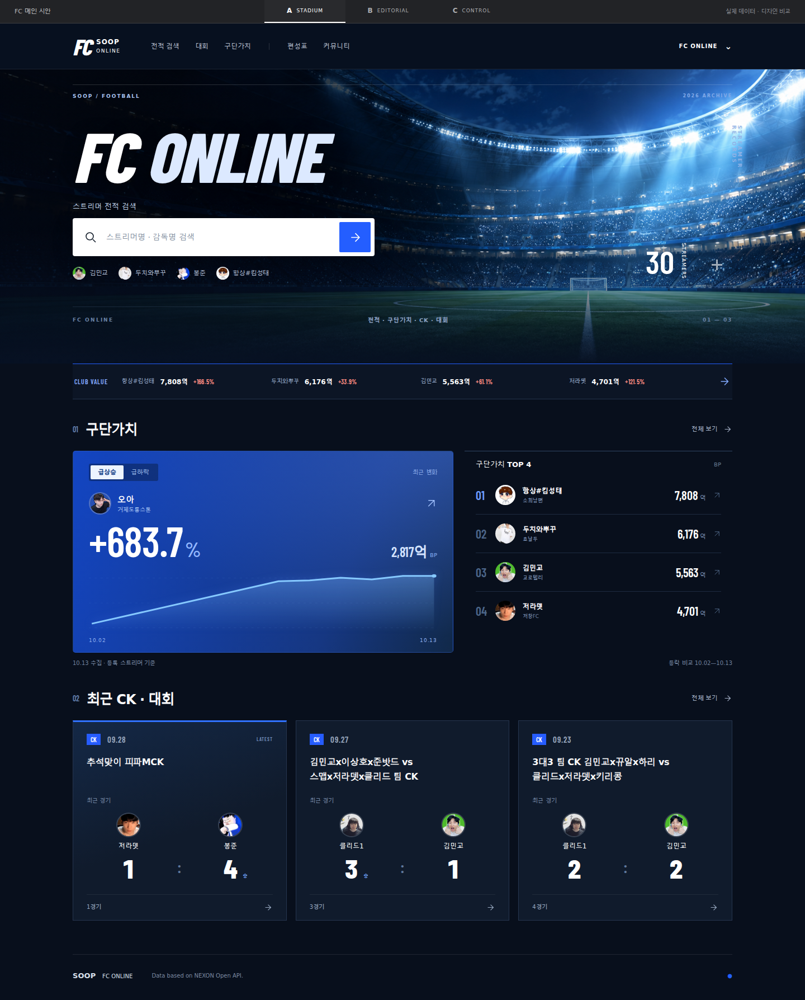
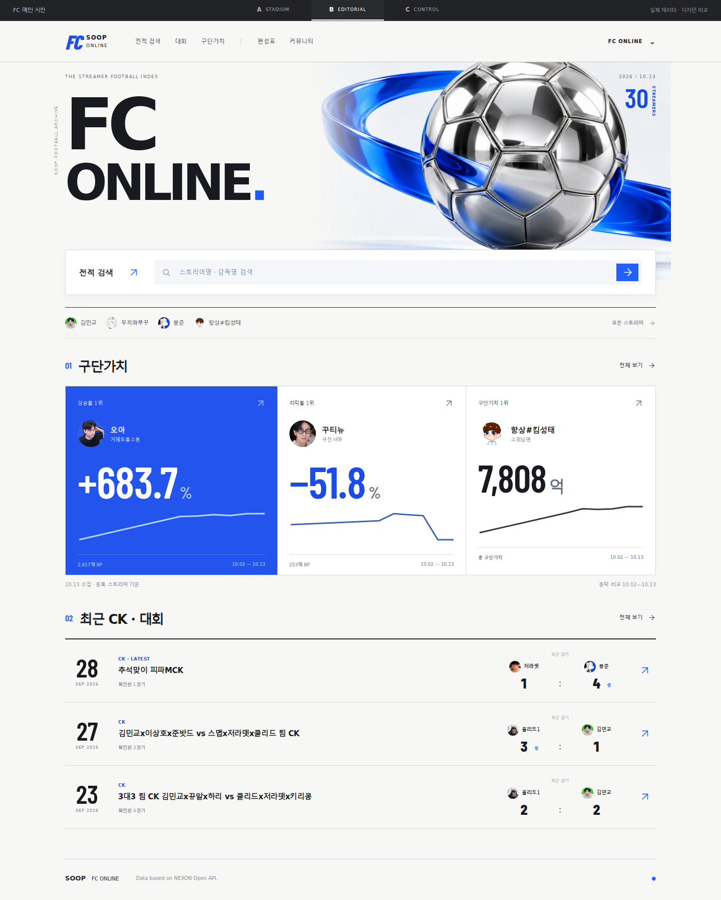
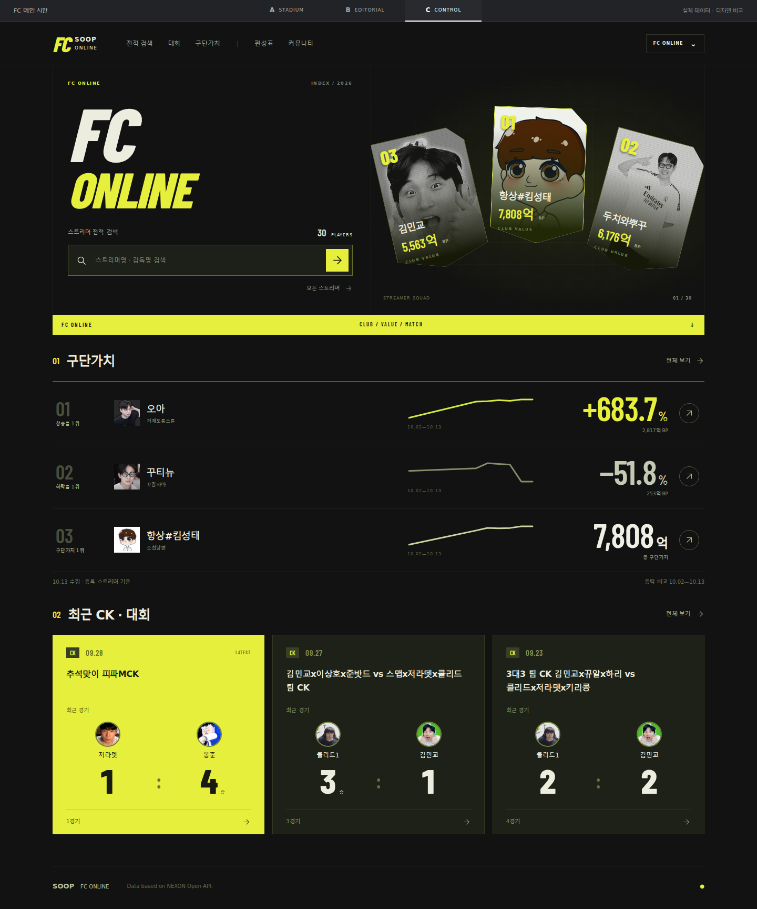

FC ONLINE / DESIGN STUDY
2026.10.13
FC 온라인 메인
시안을 누르면 검색과 링크가 동작하는 전체 화면이 열립니다.
A
STADIUM

경기장 · 블루 · 대형 차트
넓은 경기장 이미지와 중계 화면의 데이터 구성
↗
B
EDITORIAL

화이트 · 크롬 · 타이포그래피
스포츠 매거진처럼 선명한 이미지와 큰 숫자
↗
C
CONTROL

블랙·옐로 · 선수 카드 · 전광판
스트리머 카드와 숫자를 전면에 배치한 데이터 보드
↗
세 시안 모두 같은 공개 데이터 사용 · 10.13 수집 기준
검색 → 구단가치 → 최근 CK·대회 ·
이미지·생성 프롬프트